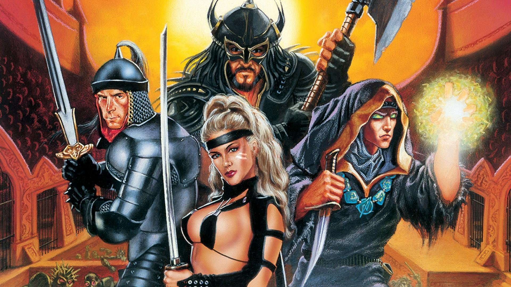
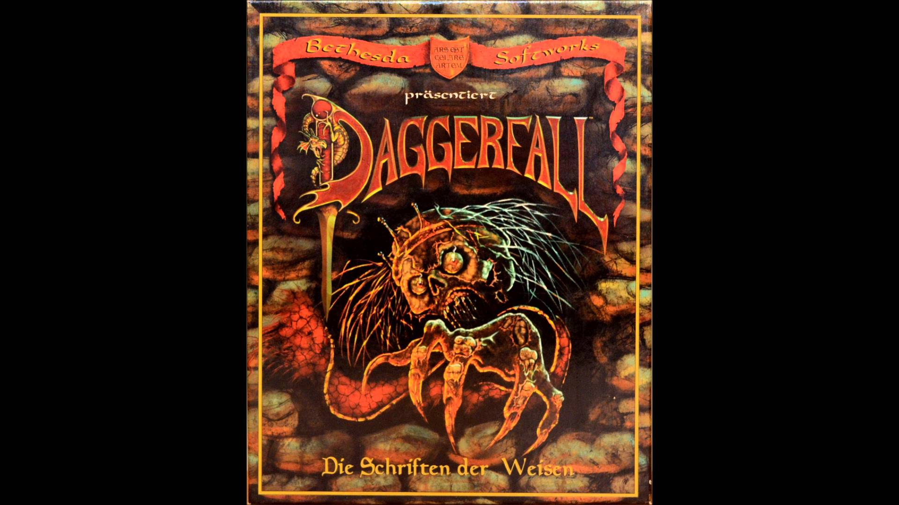
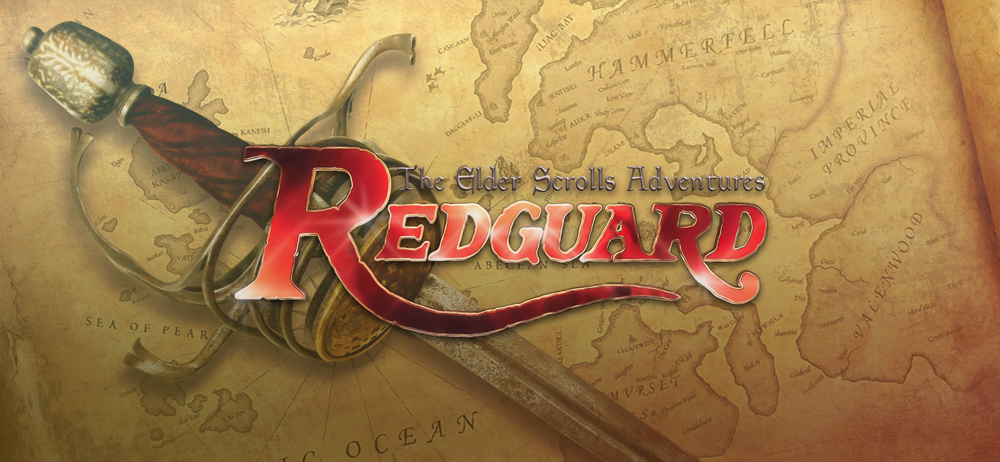
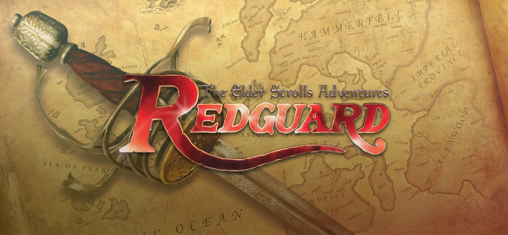
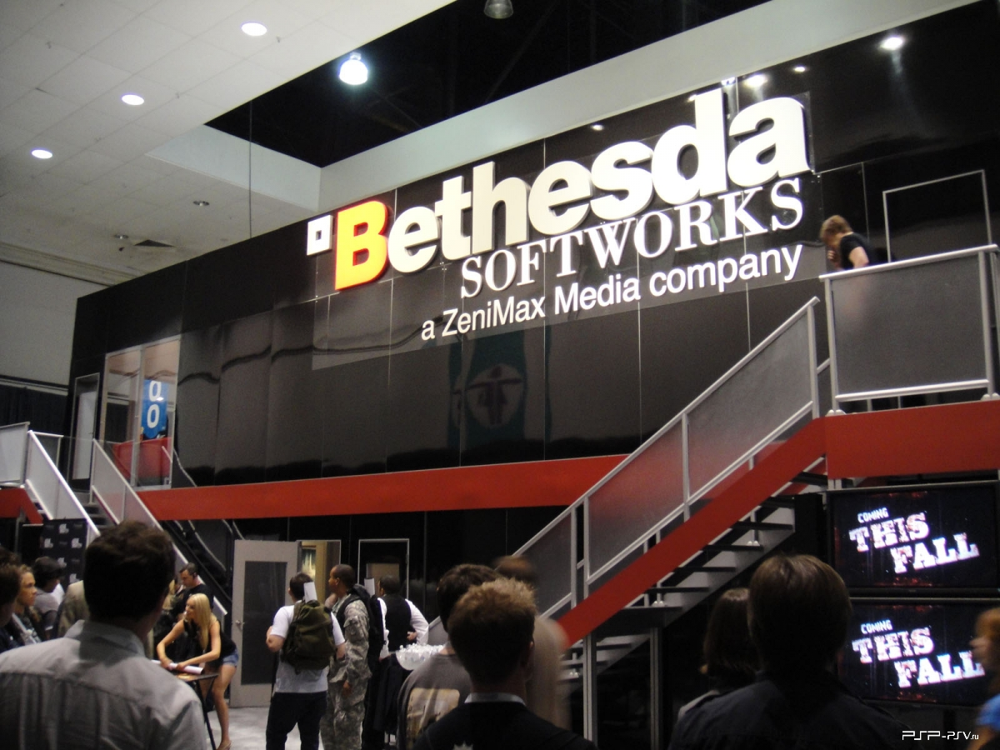

с чего все начиналось
Bethesda Softworks была основана Кристофером Уивером, как подразделение Media Technology Limited в 1986 году, где он стал генеральным директором. Он основал данную компанию для того, чтобы «посмотреть является ли рынок ПК жизнеспособным местом для разработки игр». Влатко Андонов, президент Bethesda Softworks, вспоминает, что Уивер изначально хотел назвать компанию просто «Softworks», однако обнаружил, что данное название уже занято. «Итак, наш основатель, решил после долгих размышлений добавить слово Bethesda к Softworks!».
несколько проектов
The Elder Scrolls: Arena
В 1992 году в компании началась работа над The Elder Scrolls: Arena, первой главой знаменитой серии action RPG, несмотря на то, что за 6 лет с момента выпуска Gridiron 6 из 10 выпущенных игр Bethesda Softworks были спортивными симуляторами. Arena имела огромный успех, несмотря на смешанные отзывы критиков на момент выхода[3].
Через 2 года после выхода The Elder Scrolls: Arena Bethesda Softworks выпускает продолжение — The Elder Scrolls Chapter II: Daggerfall,
которое, по мнению портала The Escaptist в 2007 году, было наиболее амбициозной игрой из всех на тот момент вышедших 4 основных частей. Для исследования игроку был доступен открытый мир размером в 2 раза больше, чем Великобритания, где можно было посетить 15 000 городов и пообщаться с 700 000 неигровыми персонажами (NPC). Однако из-за багов некоторая часть пользователей не смогли запустить игру. Несмотря на коммерческий успех, игра имела статус игры с плохим кодом. В 1997 и 1998 годах состоялся выход двух спин-оффов основной серии — An Elder Scrolls Legend: Battlespire и The Elder Scrolls Adventures: Redguard.
.jpg) 

Однако оба ответвления не пользовались таким же успехом, как Daggerfall и Arena. Снижение продаж не ограничивалось только франшизой The Elder Scrolls, что в результате угрожало компании банкротством. По мнению Тодда Говарда, ныне исполнительного продюсера и игрового директора Bethesda Game Studios, «годы, следующие после выхода Daggerfall, были самыми трудными для компании. Мы принимали несколько неправильные решения и сделали несколько плохих игр». В 1999 году ZeniMax Media, холдинговая медиакомпания, основанная Крисом Уивером и Робертом Альтманом, приобрела Media Technology (также основанную Уивером), которой принадлежала Bethesda Softworks[3].
Ныенешняя ситуация
Bethesda Softworks занимается изданием проектов, разработанных дочерними компаниями ZeniMax Media. На данный момент компания известна за счет таких проектов, как: серии The Elder Scrolls, Fallout и игра Starfield от Bethesda Game Studios, серии Doom, Quake и Rage от id Software, серия Wolfenstein от MachineGames, серия The Evil Within от Tango Gameworks, серия Dishonored и игра Prey от Arkane Studios. Кроме игр внутренних компаний ZeniMax Media, Bethesda Softworks иногда издаёт проекты в своих франшизах, разработанные при участии сторонних студий. Например, игра Rage 2 разрабатывается силами дочерней компании id Software и компании Avalanche Studios.Кроме издания игр, компания занимается поддержкой собственной платформы цифровой дистрибуции Bethesda.net, а также имеет собственную платформу для выпуска модификаций для игр The Elder Scrolls V: Skyrim (только Special Edition) и Fallout 4 под названием Creation Club. Моды для обеих игр могут быть выпущены как на ПК под управлением Windows, так и для игровых приставок PlayStation 4 и Xbox One. Часть модификаций продается за определённую плату и позиционируется как «маленькие DLC»[17]